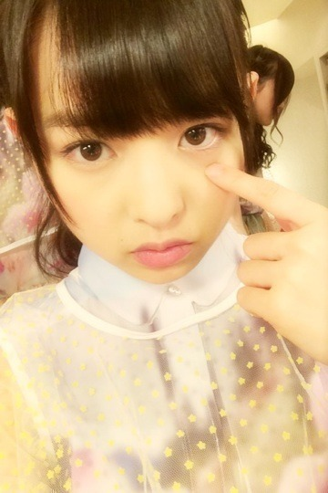
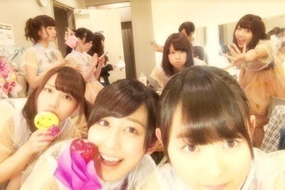
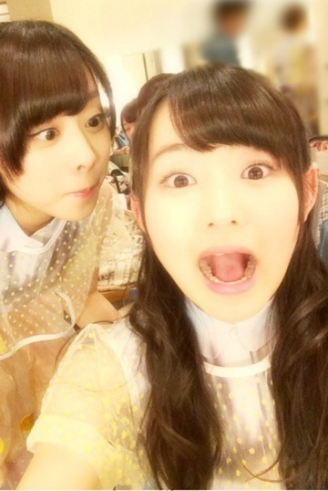

| 2014/05 05 Mon | ジャムは無意識。568 回目 |
最近、、、

下まつげが欲しい！！！！
って思うの。
ぶぁさってなりたい、
目の周りにぶぁさ！みたいな、
ね、うん、
誰か下まつげください。
......
アンダースペシャルライブ！
が無事終了しました！
12時、15時、18時の3公演。

全握券3枚が応募券だったため
来てくださるかどうか
不安でいっぱいでしたが、
もう一度呼びかけして完売。
本当にありがとうございました。
セットリスト
制服のマネキン
狼に口笛を
会いたかったかもしれない
-MC1-
ガールズルール
君の名は希望
生まれたままで
-MC2-
ユニット2曲
初恋の人を今でも(1部3部)
涙がまだ悲しみだった頃(2部)
おいでシャンプー
アンコール
気づいたら片想い
13日の金曜日
13日の金曜日が最後って
アンダーらしい

日に日に落ちサビを
歌ってくれる方が増えてきてる。
なんか合唱団みたいで楽しい♪
一緒に歌うっていいね。
MC2の部分は
3グループにわかれて
それぞれMCを担当しました〜
いつものライブだと緊張して
うまくしゃべることができないのに
まったく緊張しなかったよ〜
MCで緊張しなかったの初めてだ笑
みなさんノリ良すぎだし、
とても安心してましたっ
私は3部でユニット曲に参加。
私のために誰かのために
歌へたvs歌うま
私はもちろん歌へた組
あまりにも緊張しすぎて
顔がにやけたり固まったりと
落ち着いてないのがみなさんにバレて
「まりかがんばれー」
という声援をたくさんもらった笑
うん、落ち着きました...泣
歌上手くなりたいなあ
3部のアンコールが終わった後
またアンコールの声が...
まさかのWアンコール。
泣きそうになりながらも
おいでシャンプーを
もう一度歌いました。
終了してからも拍手、声援
袖で聞いていました。
幸せです。
メンバーも観に来てくれました。
嬉し恥ずかしな気持ち！
来てくれてありがとう〜


奥歯見えちゃうくらい
楽しんでもらえたかな。
17日の名古屋アンダーライブも
頑張ります！！！
今日は横浜個別握手会！
楽しみ〜♪
まりか
コメント(452)
2014/05/05 08:30